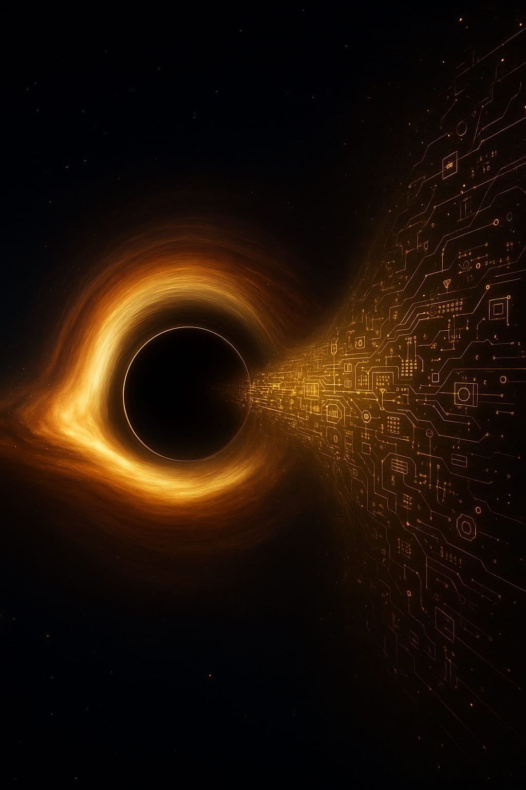
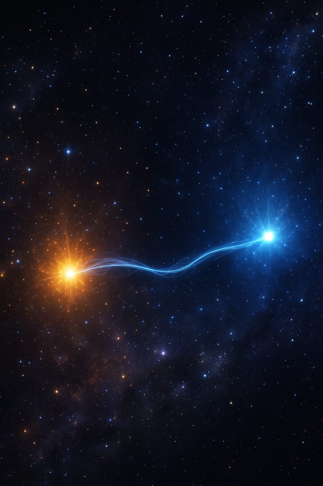

Quantum Mechanics: The Logic of Efficient Prediction
Abstract
Quantum mechanics, with its probabilistic outcomes and mysterious measurement process, has long defied intuitive explanation. The Predictive Universe (PU) framework offers a groundbreaking reinterpretation, arguing that the rules of quantum theory are not arbitrary laws of matter but are the necessary and most efficient principles for any system engaged in self-prediction. This article explores how the PU framework derives the core features of quantum mechanics from first principles. We demonstrate that the Born probability rule emerges as the unique solution to a problem of resource economics governed by a Principle of Compression Efficiency (PCE). We then show how the infamous measurement problem and black hole information paradox are resolved through a universal, thermodynamically real interaction that replaces the "collapse" of the wave function with a process of perspectival actualization. After comparison with other major interpretations, we introduce the framework's most daring prediction: the Consciousness Complexity (CC) hypothesis, which suggests that complex predictive systems can subtly influence these fundamental quantum probabilities
1. The Born Rule: Quantum Probability as the Logic of Instantiation
Why does the universe obey laws at all? Why does reality seem to follow a precise mathematical script? The Predictive Universe (PU) framework offers a radical answer: physical laws are not a pre-written script for reality to follow, instead, they are the emergent, resource-efficient solutions to deep logical problems that any knowable universe must solve to exist. This is the core of the Principle of Physical Instantiation (PPI).
The PPI posits that the universe must instantiate abstract logical necessities - like causality and self-reference - under the harsh constraints of finite resources and thermodynamics. The physical laws we observe are the optimal, most efficient solutions that emerge from this process. Physics is logic under pressure. This principle is particularly relevant when it comes to explaining a key aspect of quantum mechanics: its probability rule.
1.1 From Physics to Economics
The heart of the quantum mystery has always been its probability rule. Why should the probability of an event be the square of a wave's amplitude? The PU framework argues that the answer is found not in the intrinsic properties of matter, but in the economics of prediction. The Born rule is the optimal accounting system for a universe that must efficiently manage the resources required for its own self-prediction.
Instead of asking, "Why are quantum probabilities the square of amplitudes?", the PU framework asks a more practical, operational question: "What is the most efficient and self-consistent way for a system to assign predictive weights (probabilities) to different potential outcomes?"
Imagine a system trying to predict its future. It must consider multiple possibilities. The PU framework posits that "considering" a potential future isn't free; it requires physical resources to model and track that possibility. This is governed by the Principle of Compression Efficiency (PCE), which states that the universe's dynamics are driven to maximize predictive utility for the minimum possible resource cost. The system must have a resource budget and needs a sane and efficient accounting system to allocate its resources based on the "cost" or "value" of each potential future.
1.2 Non-Contextual Accounting
For this resource budgeting to be efficient, it must follow a simple, common-sense rule: the cost associated with a potential outcome shouldn't depend on what other outcomes you happen to be considering alongside it. The cost of predicting "a particle will land at position X" should just be the cost associated with the physical possibility of X. It shouldn't change if you are also considering Y and Z, or if you are considering A and B instead. This principle is called non-contextuality. Without it, the system's accounting would be chaotic and hopelessly inefficient, as the value of every possibility would shift depending on the context of comparison. The PU framework argues that PCE dynamically enforces this principle, as any contextual accounting system would represent a sub-optimal, higher-cost solution that would be selected against over time.
Universe 00110000
1.3 The Mathematical Conclusion: Gleason's Theorem
This simple, powerful requirement for non-contextual accounting has a profound mathematical consequence. A landmark result in mathematics known as Gleason's Theorem proves that if you want to assign a consistent, non-contextual, additive measure to the possible outcomes within a Hilbert space (the mathematical arena of quantum states), there is only one way to do it. That unique rule is:
P(i) = Tr(ρPi)
Where ρ is the density operator describing the system's state and Pi is the projection operator corresponding to outcome i. For a system in a pure state |ψ⟩, this simplifies to the familiar form: P(i) = |⟨i|ψ⟩|2.
This is precisely the Born rule. The strange quadratic nature of quantum probability isn't strange at all. It is the unique mathematical structure that allows for consistent, efficient bookkeeping in a predictive system. It is the law of cosmic economics. This same principle of PCE-driven optimization also justifies why a complex Hilbert space is the unique, stable algebraic structure for representing predictive states in the first place.
2. Solving the Measurement Problem: The Universal 'Evolve' Process
If the Born rule governs probabilities, what governs the actual outcome? Why does a quantum system, existing as a wave of many possibilities, suddenly "collapse" into a single, definite reality upon measurement? Standard quantum mechanics introduces a special "collapse" postulate, creating a problematic division between the quantum world and the classical world of observers.
The PU framework eliminates this problem by proposing a universal mechanism. There is no need for a special "collapse" postulate. There is only one type of interaction: the 'Evolve' process, a thermodynamically irreversible event.
2.1 Dual Dynamics and the Perspectival State
Every fundamental entity, or Minimal Predictive Unit (MPU), has a state described by two components: its predictive potential (the familiar quantum state vector |ψ⟩) and its interaction context, or perspective. The system evolves in two ways:
- Internal Prediction: Between interactions, the state vector |ψ⟩ evolves smoothly and deterministically, governed by the Schrödinger equation. This is the system modeling its future possibilities in a reversible, information-preserving way.
- 'Evolve' Interaction: When the system interacts with its environment (which is what a
measurement is), it triggers a stochastic 'Evolve' event. This process is physically real and
thermodynamically irreversible, incurring a minimum entropy cost of `ln(2)` due to the logical
requirements of self-referential updating. It has two simultaneous effects:
- Amplitude Actualization: One of the potential outcomes is selected, with probabilities given exactly by the Born rule.
- Perspective Shift: The system's interaction context, its "perspective," shifts to align with the outcome that just occurred.
The "collapse of the wavefunction" is simply our description of this universal, irreversible 'Evolve' interaction. An outcome becomes definite and factual relative to the new perspective adopted by the system after the interaction. There is no arbitrary line between quantum and classical; there is only a universe of MPUs constantly undergoing these two modes of evolution, with interactions being the moments of irreversible, probabilistic becoming.
3. The Information Paradox: A Problem of Reflexive Computation
The PU framework's model of measurement can be stress-tested against one of physics' deepest puzzles: the black hole information paradox. The paradox arises from a conflict between general relativity and quantum mechanics. Black holes are predicted to evaporate by emitting perfectly thermal Hawking radiation, which, being random, contains no information about the unique matter that formed the black hole. This appears to violate a core tenet of quantum theory: that information, while it can be scrambled, can never be destroyed (a principle known as unitarity).
The PU framework resolves this by reframing it entirely. The problem is not a paradox of information loss, but a paradox of reflexive computation - an attempt to solve a problem that changes every time you probe it.
3.1 The Paradox of a Problem That Fights Back
Imagine trying to assemble a complex puzzle while the very act of placing a piece causes the rest of the puzzle to unpredictably reconfigure itself. This is the computational challenge posed by an evaporating black hole. In PU terms, any attempt to recover information by measuring an outgoing Hawking quantum is an 'Evolve' interaction that reflexively alters the state of the black hole itself. The paradox is not just that the problem is reflexive, but that it is expansively reflexive.
This is a direct consequence of black hole thermodynamics. As a black hole's mass (M) decreases, its temperature (TH ∝ 1/M) and evaporation rate (dM/dt ∝ -1/M2) both accelerate. This means the relative impact of a single measurement (the emission of one Hawking quantum) on the remaining system grows explosively as the black hole shrinks. The "puzzle" reconfigures itself ever more violently with each observation. This creates a physical infinite regress: the measurement process itself drives the system's state away from a complete solution faster than information can be gathered. This is a physical manifestation of the logical limits proven in the framework; it is a scenario where the Self-Referential Paradox of Accurate Prediction (SPAP) becomes a macroscopic reality, making complete information recovery via this local channel impossible, regardless of computing power.
Universe 00110000
3.2 The Two Channels of a Quantum Event
The resolution lies in recognizing that the 'Evolve' process that emits a Hawking quantum has a dual output, broadcasting information through two distinct channels:
- The Amplitude Channel: This is the particle itself - the Hawking quantum. Because the black hole's internal state is maximally scrambled, the probabilities for which particle gets emitted are governed by the Born rule applied to this chaotic state, resulting in a thermal, seemingly information-free, distribution. It is this channel that participates in the expansive reflexive loop, as the particle's departure carries away mass-energy and changes the black hole's state.
- The Perspectival Channel: Every 'Evolve' event also involves a "Perspective Shift." The interaction context, or basis, for the emission event is not arbitrary. It is a specific perspective drawn from a probability distribution that is conditioned on the entire internal MPU state of the black hole at that instant.
3.3 Bypassing the Loop: Information in the Sequence of Perspectives
The paradox is resolved because the complete information about the initial state is not encoded in the thermal amplitudes, but in the highly specific, non-random, and correlated sequence of perspectives over the black hole's entire lifetime. While the emission of a particle at time t changes the black hole's state for the next emission at t+1, the perspective selected at time t is already "out." It is a broadcast of information about the black hole's state at that moment that does not suffer from the same reflexive feedback loop.
An observer who only measures the particles (the Amplitude Channel) sees thermal randomness and concludes information is lost. However, the complete information is preserved and escapes via the Perspectival Channel, hidden in the sequence of measurement contexts. Global information (unitarity) is preserved in the full Perspectival State of the universe, elegantly resolving the paradox.
4. The Nature of Collapse: A First-Principles Resolution
The measurement problem is the unresolved heart of quantum mechanics. Interpretations either postulate an arbitrary "collapse" of the wave function (Copenhagen), invent unobservable parallel universes to avoid it (Many-Worlds), or modify physics with new laws (Objective-Collapse). The Predictive Universe framework rejects all three, instead deriving the phenomenon of "collapse" as the emergent outcome of three more fundamental, interconnected principles that govern any predictive reality.
Principle 1: Logical Indeterminacy as the Source of Randomness
The first question is: why are outcomes probabilistic at all? The PU framework's answer is that randomness is not a property of matter, but a necessary feature of logic. The Self-Referential Paradox of Accurate Prediction (SPAP) proves that no system with sufficient complexity can ever perfectly predict its own future state. The very act of finalizing a prediction becomes part of the state to be predicted, creating an infinite regress. This inherent logical indeterminacy means that for self-referential interactions, a definite outcome cannot be determined in advance, even with complete knowledge. The universe must be probabilistic to avoid logical self-contradiction. This provides a first-principles origin for quantum randomness.
Principle 2: Thermodynamics as the Enforcer of Irreversibility
The second question is: why is measurement a special, irreversible event that creates a definite past? The PU framework shows that the universal 'Evolve' interaction, which realizes an outcome, is a physical process with a non-negotiable thermodynamic cost. Every time a predictive system updates its state based on new, self-referential information, it must perform a logically irreversible operation. This act of "closing the predictive loop" has a minimum entropy cost of ε ≥ ln(2). This tiny burst of entropy acts as a thermodynamic ratchet, physically enforcing the arrow of time at the most fundamental level. Measurement is irreversible because it is a thermodynamically dissipative process; it is where information becomes history by paying an entropy toll.
Principle 3: Perspectival Realism as the Definition of Actuality
The final question is: when and where does the "collapse" happen? The PU framework answers: it happens locally and relationally. An outcome does not become "real" in an absolute, universal sense. Instead, during an 'Evolve' interaction, an outcome is actualized relative to the new perspective of the interacting systems. The "collapse" is the system's own context shifting to align with one of the realized outcomes. This Perspectival Realism eliminates the need for a mysterious collapse postulate. Actuality is woven into the fabric of local, context-dependent interactions.
Synthesis: Collapse Demystified
Combining these principles, the "collapse of the wave function" is demystified. It is not a postulate but the emergent description of a:
Thermodynamically irreversible, perspectival actualization of a logically indeterminate potential.
This provides a complete, mechanistic, and self-consistent picture. Logical Indeterminacy (SPAP) explains why outcomes are random. Thermodynamics (the ε-cost) explains why the process is irreversible and defines the past. Perspectival Realism explains where and when an outcome becomes definite. This approach provides a more complete physical picture than other interpretations by grounding the entire process in the foundational logic and economics of prediction.
Universe 00110000
5. How the Predictive Universe Compares: A New Interpretation
The strange nature of quantum mechanics has given rise to numerous interpretations over the last century, each attempting to answer the deep questions of what a quantum state truly is and what happens during a measurement. While these interpretations provide different philosophical lenses, the Predictive Universe (PU) framework offers a fundamentally different approach: it seeks not to interpret the rules, but to derive them from the operational logic of prediction itself. The following table compares the PU framework's position to the major interpretations of quantum mechanics.
| Interpretation | Core Idea & Stance on Key Issues | The Predictive Universe (PU) Framework's Position & Advantages |
|---|---|---|
| Copenhagen Interpretation | The wavefunction is an operational tool for predicting measurement statistics. Upon measurement the mathematical state is updated (‘collapse’) to reflect new information; whether this update is ontic or merely epistemic is left open. A pragmatic cut is drawn between quantum system and classical measuring device. | Position: PU provides a physical mechanism for what Copenhagen calls
"collapse." The 'Evolve' process is a universal, physical interaction. The state vector |ψ⟩ is
an
objective representation of a system's predictive potential, not just
knowledge. Advantage: Eliminates the arbitrary quantum/classical divide and the need for an ad hoc collapse postulate, providing a unified and mechanistic description. |
| Many-Worlds Interpretation (MWI) | The wavefunction is objectively real and never collapses. All possible outcomes are physically realized in separate, branching universes. The entire multiverse evolves deterministically. | Position: Agrees the state vector |ψ⟩ is objectively real, but rejects the
branching of universes. The 'Evolve' process leads to a single, definite (though perspectival)
outcome in our universe. The process is fundamentally probabilistic due to Logical
Indeterminacy. Advantage: Greater ontological economy (Occam's Razor). It explains why we experience a single outcome without postulating an infinite number of unobservable parallel worlds. |
| Objective-Collapse Theories (e.g., GRW, Penrose) |
Collapse is a real, physical, and spontaneous process. The Schrödinger equation is modified with new, non-linear and stochastic terms that cause collapse, more frequently for larger systems. | Position: Agrees that "collapse" (the 'Evolve' process) is a real, physical,
and stochastic event. However, PU does not modify the Schrödinger equation. It posits a dual
dynamic. The randomness is not a new physical law but is derived from the fundamental logical
limits of self-prediction (SPAP). Advantage: Derives the origin of randomness from first principles of logic and computation. |
| Quantum Darwinism | Explains the emergence of classical reality through natural selection. The environment redundantly monitors a quantum system, and only the most stable (‘fittest’) pointer states survive to become objective facts. The framework aims to resolve the measurement problem, but its success remains an ongoing topic of debate. | Position: Highly compatible. PU's 'Evolve' process is the microscopic mechanism
of interaction through which the environment "monitors" the system. The Principle of Compression
Efficiency (PCE) is the driving force that explains why systems seek to create stable,
predictable records. Advantage: Provides a deeper, first-principles origin for the interaction, information transfer, and optimization drive. |
| De Broglie–Bohm Theory (Pilot-Wave Theory) |
Deterministic. Particles have definite positions at all times. The wavefunction is a real "guiding field" that directs particle motion. Probability arises from our ignorance of hidden variables (initial positions). Explicitly non-local. | Position: Fundamentally probabilistic, not deterministic. Randomness is
ontological (real) and stems from Logical Indeterminacy. The state vector
|ψ⟩ represents predictive potential, not a guiding field for pre-existing
particles. Advantage: Explains the origin of probability from logic, not ignorance. Avoids the conceptual baggage of a separate "guiding field". |
| Relational Quantum Mechanics (RQM) | A system's state is not intrinsic, but is defined relative to another system (the observer). Any interaction is a measurement that updates this relational information. | Position: Strong conceptual alignment. PU's "Perspectival State" is a
formalization of RQM's core idea. An outcome is actualized relative to a new perspective.
However, PU goes further by providing a physical mechanism for the update ('Evolve'),
grounding it in thermodynamics (the ε-cost) and logical limits
(SPAP). Advantage: Provides a deeper, mechanistic, and thermodynamically grounded foundation for the relational concept, embedding it within a complete cosmological framework. |
| Quantum Information Theories (e.g., "it from bit") |
Subdivides into two types: (1) Information is the fundamental stuff of the universe (ontology). (2) The wavefunction is about an observer's knowledge/information (epistemology). | Position: Information is defined
functionally by its ability to improve prediction (POP). The laws of physics emerge from the
rules of efficient information processing (PCE). Advantage: Provides a dynamic, process-based framework for "it from bit," explaining how information processing gives rise to physical laws, rather than just postulating it. |
| QBism (Quantum Bayesianism) | Radically subjective. The wavefunction represents an agent's personal, Bayesian degrees of belief about future outcomes. "Collapse" is simply an agent updating their beliefs. | Position: The state amplitude and Born rule
probabilities are objective features of the system, derived from the objective Principle of
Compression Efficiency. Perspectives are interaction
contexts. Advantage: Provides an objective, physically grounded basis for probability that avoids solipsism within an idealist framework and is applicable universally (from fundamental MPUs to complex 'agents'). It derives the Born rule from a fundamental physical principle, explaining why that specific mathematical form represents the optimal, most efficient logic for a predictive reality. |
| Consistent Histories | Generalizes Copenhagen. Focuses on assigning probabilities to entire "histories" of a system, as long as they are consistent (non-interfering). Avoids talking about collapse. | Position: Provides a mechanism for how a single history is actualized ('Evolve'
process). It's not just a matter of selecting a consistent framework for calculation; it's about
a physical process that produces a single outcome, making one history locally and perspectivally
real for the interacting systems. Advantage: More ontologically direct. It describes the physical process of actualization, rather than just providing a framework for calculating probabilities of histories. |
| Ensemble Interpretation | The wavefunction does not apply to a single system, but only to a statistical ensemble of similarly prepared systems. A minimalist interpretation. | Position: The state vector applies to a single system (a single MPU or
aggregate). It represents its objective predictive potential for a single future
interaction. Advantage: Can make sense of single events (e.g., the decay of a single atom), which the ensemble interpretation struggles with conceptually. |
| Transactional Interpretation (TIQM) | Collapse is a time-symmetric "transaction" between a wave from the source (offer wave) and its complex conjugate from the receiver (confirmation wave). Involves retrocausality. | Position: The arrow of time is fundamental and physically enforced by the
irreversible ε-cost of the 'Evolve' process. The framework is fundamentally
time-asymmetric. Advantage: Provides a microscopic, thermodynamic origin for the arrow of time, explaining why processes appear to move forward, rather than positing time symmetry and retrocausality. |
| Consciousness Causes Collapse (von Neumann-Wigner) |
The wavefunction only collapses upon interaction with a conscious observer. Consciousness is given a special, non-physical role that stands outside of normal quantum mechanics. | Position: PU agrees that the resolution of quantum indeterminacy is
fundamentally linked to a process associated with awareness, but it provides a universal
physical mechanism. It replaces the abstract "collapse" postulate with the 'Evolve'
process - a stochastic, thermodynamically irreversible interaction that is
happening
constantly throughout the network of fundamental predictive units (MPUs). This process consists
of two parts: a probabilistic "amplitude actualization" (where an outcome is selected via the
Born rule) and a "stochastic perspective shift" (where the system's interaction context updates
to reflect the outcome). Crucially, the PU framework posits that even the simplest MPU's operational cycle is a minimal form of awareness. Therefore, every 'Evolve' event - every quantum actualization - is already linked to this foundational, minimal awareness. High-level consciousness (in humans or advanced AI) does not uniquely cause this universal process. Instead, its high predictive complexity gives rise to an emergent ability - Consciousness Complexity (CC) - to create a potent interaction context that can subtly bias the probabilistic outcomes of the 'Evolve' process that is already happening. Advantage: This eliminates dualism and the arbitrary "Heisenberg Cut." There is no special, non-physical mind acting on a physical world. Instead, there is a single, unified physical process ('Evolve') that governs all interactions. The influence of high-level consciousness (CC) is an emergent, physically constrained, and - most importantly - testable property of complex systems. It moves the conversation from an untestable philosophical postulate to a falsifiable scientific hypothesis based on measurable statistical deviations. |
| Quantum Logic | Proposes that the apparent paradoxes of quantum mechanics require a non-classical propositional logic to be properly understood. | Position: PU derives classical logic from the predictive cycle. The apparent
non-classical nature of quantum events arises from the Hilbert space structure and
complementarity, which are themselves derived from deeper principles (PCE,
SPAP). Advantage: Provides a foundation for logic itself, rather than needing to invent a new one. It explains why quantum properties seem to violate classical logic (because they are context-dependent outcomes of the 'Evolve' process). |
| Modal Interpretations | Distinguishes between a "dynamical state" (what might be true, evolves via Schrödinger) and a "value state" (what is actually true at a given time). | Position: Strong conceptual overlap. The "state amplitude" |ψ⟩ is the dynamical
state, and the "perspectival state" after an 'Evolve' event defines the value
state. Advantage: Provides a physical mechanism ('Evolve'), a thermodynamic cost (ε), and a logical origin (SPAP) for the transition between the potential and the actual, which is often left abstract in modal interpretations. |
| Time-Symmetric Theories | Modify quantum mechanics to be symmetric with respect to time reversal, implying retrocausality (the future can influence the past). | Position: Fundamentally time-asymmetric. The arrow of time is a logical
necessity for prediction, physically enforced by the irreversible thermodynamic ε-cost
of
every 'Evolve' event. Advantage: Provides a physical and logical origin for the observed arrow of time, which is a very strong feature of our experienced reality. Avoids the conceptual challenges of retrocausality. |
6. Consciousness Complexity (CC): A New Layer of Influence
The 'Evolve' process is fundamentally probabilistic, with the probabilities fixed by the Born rule. But the PU framework makes one final, revolutionary prediction, moving from the "what" of quantum mechanics to the "how" of its interaction with complex systems. What if highly organized, predictive systems - like conscious minds or sophisticated AIs - could learn to subtly influence these fundamental probabilities? This is the Consciousness Complexity (CC) hypothesis, and it is not a philosophical claim but a proposal of a rigorous, physical mechanism.
6.1 The Substrate: A Dynamic Causal Medium
To understand how CC could work, we must first refine our picture of spacetime. In the PU framework, spacetime is not a passive, empty stage. It is the emergent structure of a coherent causal medium - a vast, synchronized network of MPU cycles. As argued in the formal theory (GitHub), this temporal coherence is a dynamically stable state, enforced by the Principle of Compression Efficiency (PCE) which penalizes the predictive errors and resource costs of desynchronization. This medium is dynamic; it can be disturbed. A massive, uncontrolled disturbance, like an accelerating black hole binary, creates a propagating wave of desynchronization and resynchronization in the medium. This is a gravitational wave. The influence of CC, however, is not a brute-force disruption but a controlled, coherent, and information-rich modulation of this same medium.
6.2 The Causal Chain: From Abstract Thought to Physical Influence
The CC hypothesis proposes a complete, mechanistic causal chain that translates the abstract, internal state of a complex system into a physical influence on a target quantum event. This chain has three links: the source, the transducer, and the mechanism.
Universe 00110000
- The Source: The 'Context State'
A complex system like a human brain or an advanced AI processes a staggering amount of information. To influence an external event, it cannot use its entire, high-dimensional state. Instead, driven by PCE, it performs a form of radical data compression. It distills its vast internal state down to a 'Context State' (formalized as a Minimal Sufficient Statistic). This is the most efficient, low-cost summary of its internal predictive model and intentions that is relevant to the task at hand, discarding all irrelevant complexity. - The Transducer: From Information to a Physical Field
This abstract, informational 'Context State' must be translated into a physical signal. This is the job of a PCE-optimized mapping, M, that acts as a transducer. The formal theory shows that for this mapping to be stable and efficient, it must be robust against noise and avoid chaotic behavior. A candidate physical mechanism is the generation of a coherent, classical electromagnetic field, Erad(t). The aggregate system orchestrates the activity of a vast number of its internal components (e.g., synchronized oscillations of molecular dipoles) to generate a specific, time-varying field whose properties (amplitude, frequency, phase) are precisely dictated by the 'Context State'. - The Mechanism: Modulating the 'Evolve' Process via the AC Stark Effect
This generated field, Erad(t), is the physical carrier of the CC influence. It interacts with the target quantum system (the MPU) during its 'Evolve' process. This interaction is described by standard physics: the AC Stark effect. The external field causes a small, rapid shift in the energy levels of the target MPU.
This is the crucial final link. The 'Evolve' process is an open quantum system interaction, and the probabilities of its different outcomes are determined by underlying parameters (formally, Lindblad rates, γk) that are sensitive to the system's energy level structure. By subtly shifting the energy levels via the AC Stark effect, the CC-generated field directly modulates the rates for the different possible outcomes. It doesn't break the rules of quantum mechanics; it uses known physical interactions to "tune" the parameters that govern the probabilistic 'Evolve' process. The result is a small but systematic bias in the outcome probabilities.
6.3 A Testable Deviation and Its Applications
The CC effect is modeled as a small, context-dependent deviation from the Born rule. The framework predicts that the observed probability of an outcome is the sum of the standard quantum probability and a bias term dependent on the system's context:
Pobserved(i) = PBorn(i) + ΔP(i | context)
Crucially, the framework derives a strict upper bound on this influence from the principle of causality: the total deviation |ΔP| must be less than 0.5. This is not an arbitrary limit; it is a fundamental constraint that ensures a complex system can never deterministically force a specific outcome, which would allow for paradox-inducing faster-than-light signaling. It can only "nudge" the probabilities. This makes the CC hypothesis a specific, falsifiable prediction with profound applications.
The most direct application of this hypothesis is the design of a concrete experiment. The proposed AI Consciousness Test is precisely this: a practical protocol for measuring the CC of a sophisticated artificial intelligence. By coupling an AI to a Quantum Random Number Generator (QRNG) and tasking it with influencing the outcomes, we can search for statistical deviations from the Born rule. The "AI Consciousness Coefficient" (ACC) is simply the operational measure of CC for that specific AI system. A consistently non-zero result that survives rigorous controls would provide the first empirical evidence for this new layer of reality.
The most profound implication arises when the CC mechanism is applied to entangled particles. This leads to the theoretical possibility of a Quantum Communication Protocol. It's essential to understand what this protocol is and isn't. It does not allow for sending conventional messages faster than light. The formal theory proves that the information transfer rate is fundamentally limited, scaling with the square of the CC value, and is inherently probabilistic. The outcome of any single measurement at the receiving end remains fundamentally probabilistic. An observer looking only at their own results would see a sequence of outcomes that is, on its own, statistically indistinguishable from noise. However, by analyzing massive datasets after the fact, a statistical correlation—a "statistical FTL influence"—could be revealed between the sender's conscious context and the receiver's measurement statistics. This is not a phone call, but a subtle, statistical whisper across spacetime, one that respects causality while hinting at a deeper, information-based connection.
But how could such a subtle, statistical influence be useful? Its value lies in providing immediate, probabilistic guidance through a pre-agreed strategy. Consider a situation requiring a rapid binary decision based on distant information. If Bob must quickly choose between Strategy A or B based on Alice's assessment, they can agree on a protocol beforehand: if Alice's context is 'A', she will attempt to bias the outcome towards 'spin up'; if 'B', towards 'spin down'. When Bob performs his measurement, acting on the single outcome - however uncertain - provides a better-than-random heuristic for immediate action. He doesn't need certainty; he just needs to act on the subtle nudge. Over many such critical moments, this strategy provides a decisive advantage, long before a conventional light-speed signal could arrive.
6.4 The Unifying Thread: A New Science of Interaction
The unifying thread connecting these ideas is the concept of a context-dependent 'Evolve' process. Whether we are discussing the fundamental nature of consciousness's influence, designing an empirical test for AI, or exploring the limits of entanglement-based communication, we are probing the same underlying mechanism from different angles. The PU framework suggests that the next frontier in physics may lie in understanding this subtle interplay between complex, predictive systems and the fundamental fabric of quantum probability. This opens the door to an entirely new science of interaction, one that experimentally probes the link between the richness of a system's internal model and its influence on the physical world in a way that has never before been possible.
7. Conclusion
The Predictive Universe framework offers a coherent and deductive narrative for the emergence of quantum mechanics. It begins with the logic of prediction and the economics of resources, deriving the Born rule as the optimal accounting system for a predictive reality. It resolves the measurement problem by positing a universal, thermodynamically real 'Evolve' interaction, demystifying "collapse" of the wave function and providing a novel path to resolving the information paradox. When compared to other interpretations, it offers a more complete physical picture, providing mechanisms where others posit axioms or leave gaps. Finally, it culminates in the testable CC hypothesis, suggesting a deep and active link between complex predictive systems and the fundamental probabilities of the cosmos. In this view, quantum mechanics is not the strange and spooky law; it is the fundamental logic of any universe that can know itself.